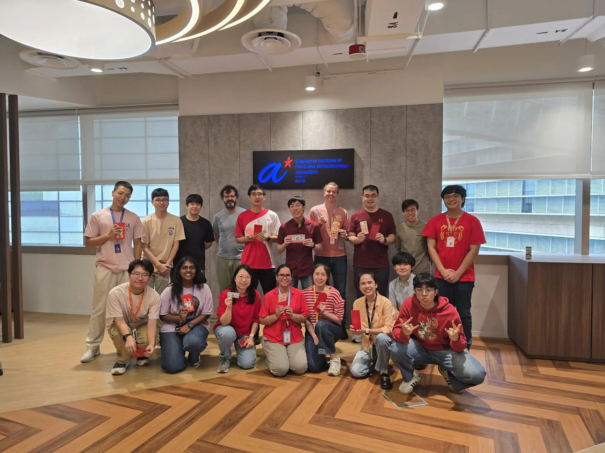
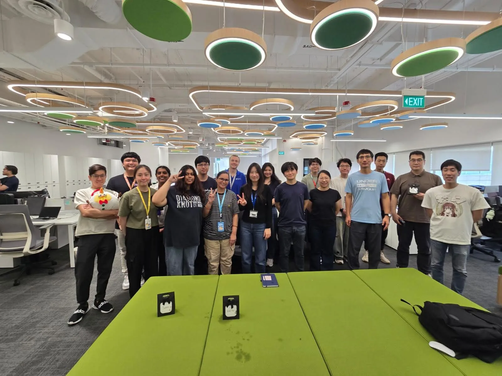
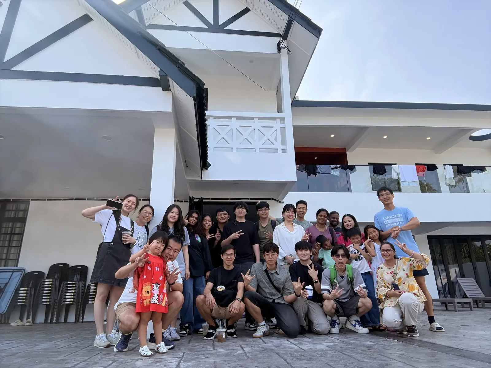

"We engineer microbial cell factories to produce chemicals, fuels, and food ingredients — turning renewable feedstocks into high-value products through precision metabolic design and synthetic biology."
Zhang Lab · SIFBI, A*STARRecent updates
Many congratulations to Dr. LIM Xiao Hui on successfully defending her PhD — a hard-earned milestone, and a proud moment for the lab.
The whole group spent three days at LEGOLAND in Johor Bahru — rides, building competitions, and a chance to recharge together away from the bench.
We report a new arabinose-inducible univariant control system (AUCS) that enables precise, tunable expression for microbial production of proteins, enzymes, and metabolites.
Interested in synthetic biology and metabolic engineering of microbial cell factories? See the Joining the Lab page, or email Dr. Zhang with your CV and a brief statement of research interests.
Our work on engineering E. coli to produce rose-scent monoterpenes geraniol and geranyl acetate at high titer using innovative microaerobic bioprocesses.
Research
Our lab focuses on designing and optimizing microbial cell factories through metabolic engineering, synthetic biology, and systems biology approaches.
Engineering E. coli, yeast, and non-model microorganisms as efficient platforms for biosynthesis of target molecules through rational and evolutionary strategies.
Engineering microbes to produce isoprenoids, food ingredients, flavours and fragrances, specialty chemicals from renewable carbon sources.
Designing, constructing, and optimizing novel biosynthetic pathways using DNA assembly tools, protein engineering, and computational pathway design frameworks.
Applying CRISPR-based genome editing, omics technologies, and AI-guided modeling to understand and rewire cellular metabolism for precision strain engineering.
Developing microbial and enzymatic platforms to upcycle C1 & C2 feedstocks (methanol, CO2, ethylene glycol) and plastic waste (PET) into value-added chemicals and food ingredients.
Translating laboratory-scale microbial production to pilot and industrial bioreactor conditions through fermentation process optimization and techno-economic analysis.
Selected Research Figures
Tap a figure to enlarge · swipe to flip
Publications & Patents
Representative peer-reviewed papers and granted/pending patents from our group. For the complete publication record, visit the Google Scholar profile.
Team
A multidisciplinary team of biologists, chemists, and engineers united by the goal of sustainable biomanufacturing.
ZHANG Congqiang (Simon) 张聪强
Principal Investigator
Singapore Institute of Food and Biotechnology Innovation (SIFBI), A*STAR
Dr. Zhang Congqiang (Simon) leads synthetic biology research at A*STAR's SIFBI, where he engineers microbes into "cell factories" for sustainable chemicals, food and energy. An NUS-MIT PhD graduate with extensive publications and patents, Simon actively influences the biotech landscape through his leadership in the BioEnergy Society of Singapore and as an editor for prestigious journals including Nature Portfolio, Elsevier, and Wiley-VCH.
Senior Scientists
Scientist
Current Students
Former Staff
Former Students
Life in the lab and outside


We welcome motivated PhD students and visiting researchers. See the full Joining the Lab page → for backgrounds we look for, scholarship pathways, and how to apply.
Collaborators
We are fortunate to work with outstanding scientists and groups across Singapore and around the world. Our collaborations span synthetic biology, metabolic engineering, enzymology, and bioprocess engineering.
Primary Collaborator
Contact
We welcome inquiries from prospective collaborators, students, and the media.